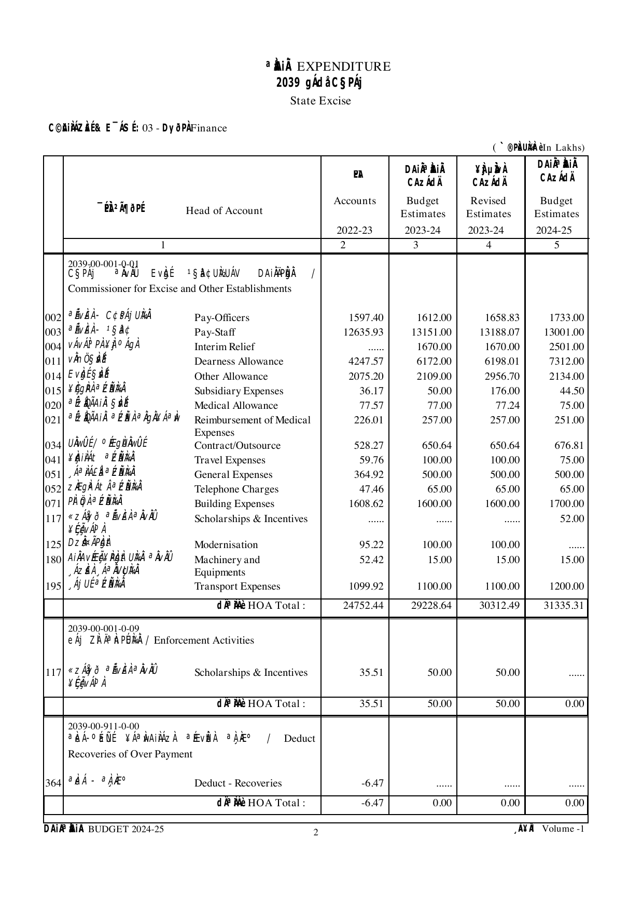

Introduction to the documents
Every year the Government of Karnataka publishes its Detailed Estimates of Expenditure as a set of seven volumes (EXPVOL1–EXPVOL7) — the per-department backing detail behind the Demand for Grants. Each volume is a long PDF of accounting tables: for every department (a “demand”), money is broken down through a fixed hierarchy of account heads, with four money columns — prior-year Accounts, current Budget Estimate, current Revised Estimate, and next-year Budget Estimate.
These PDFs are built for printing, not analysis. This package extracts them to CSV and JSON while keeping the document’s shape, so any number can be traced back to the page it came from.
The CSV is document-shaped by design. It keeps headers, totals, and summary rows so you can line the table back up against the PDF — and that same shape is the one thing you must respect when you total a column (see Don’t double-count).
A snapshot of the budget document
Here is one real page and the rows we extracted from it. Every printed line becomes a row; the extractor also records what kind of line it is.
{kind=link}

KA_2024_25_EXPVOL1.pdf, page 2 — Demand 03 (Finance), Major Head 2039 (State Excise). Excise administration sits under the Finance Department, so it appears in Demand 03. Click the image to open it full-size.The table below is the machine-readable version of that page (the current-year Budget Estimate column shown):
| Sum? | row_type | row_level | row_header | object_ head_code | BE 2024-25 (₹ lakh) |
|---|---|---|---|---|---|
| × | Header | Detailed-Head | Commissioner for Excise and Other Establishments | ||
| ✓ | Data | Object-Head | Pay-Officers | 002 | 1,733.00 |
| ✓ | Data | Object-Head | Pay-Staff | 003 | 13,001.00 |
| ✓ | Data | Object-Head | Interim Relief | 004 | 2,501.00 |
| ✓ | Data | Object-Head | Dearness Allowance | 011 | 7,312.00 |
| ✓ | … 13 more Object-Head leaf rows (all visible on the page image) … | 6,788.31 | |||
| × | Total | Detailed-Head | HOA Total (Head of Account) | 31,335.31 | |
Tinted rows are the additive leaves (row_type = Data and row_level = Object-Head) — the only rows you add up. The 17 leaf rows sum to 31,335.31. The grey Total row repeats that same 31,335.31: add up everything and you count it twice.
The columns you’ll use first
You don’t need all 30-odd columns to start. These few answer most first questions. (The complete reference is at the end of this guide.)
| Column | What it is |
|---|---|
fiscal_year | The year an amount refers to, e.g. 2024-25. |
measure | One of BE, RE, Actuals (see the three measures). In the raw CSV these are separate amount columns instead. |
demand_number | The department / grant, e.g. 03 = Finance. Map numbers to names with demand_names.json. |
major_head_code / major_head_name | Broad function, e.g. 2210 Medical and Public Health. |
object_head_code / object_head_description | The line item, e.g. 003 Pay-Staff (see the ladder). |
amount_lakh | The amount, in INR lakh. Divide by 100 for crore. |
type_of_table, row_type, row_level | The three columns that tell you which rows are safe to add (see Don’t double-count). Needed for the raw CSV; the examples/ tidy table has already applied them. |
The accounting ladder
The DEA Budget Manual describes six tiers in the Detailed Demands for Grants. In this package they appear as code/name columns from Major Head down to Object Head.
00 often means no sub-major split.Don’t double-count
You just saw it: the object-head leaf rows under “Commissioner for Excise” sum to 31,335.31, and the HOA Total row says 31,335.31 again. Do not sum the whole table. Totals and summary rows repeat amounts already present in leaf rows.
To total safely, keep only the additive leaf rows — all three conditions are required:
WHERE type_of_table = 'object_head'
AND row_type = 'Data'
AND row_level = 'Object-Head'About 37% of rows are headers, totals, or summary rows — all excluded by this predicate. The examples/ tidy table (karnataka_budget_tidy.csv) has this filter already applied, so you can sum it directly with no predicate.
Voted and charged
vote_charge_marker captures the source distinction where it is printed. Charged expenditure is not submitted for vote under the Constitution; voted expenditure is subject to legislative vote.
Validation is an internal consistency signal, not a guarantee that every PDF character was extracted correctly.
The three measures: plan, revision, actual
Each year carries three measures: BE (Budget Estimate, the plan), RE (Revised Estimate, the mid-year correction), and Actuals (what was actually spent). The same fiscal year is reported across several yearly documents; the package’s canonical source rule takes each measure from one document — BE from the document’s own year, RE from the next year’s document, Actuals from the year-after’s document — so a value is never counted from two sources. The examples/ tidy table applies this rule for you.
Validation drilldown
Example key:
KA.2021-22.expvol_1.in_schema.object_head.minor.03_2043_00_101| Part | Meaning |
|---|---|
KA | Karnataka. |
2021-22 | Source budget year. |
expvol_1 | Expenditure volume 1. |
in_schema | The check stays inside one source table family. |
object_head | The table family being checked. |
minor | The rollup level: object-head rows are compared with a printed minor-head total. |
03_2043_00_101 | Demand 03, Major Head 2043, Sub-Major 00, Minor Head 101. |
In checks_2021-22.csv, this key has four financial-column comparisons. Two pass exactly; two differ by INR lakh 1 and fail the 0.01 threshold. A 0.01 difference is one-hundredth of the package amount unit; if INR_lakh is correct, that is Rs 1,000.
Files to use
| File | Use |
|---|---|
years/<year>/csv/budget_<year>.csv | Extracted source rows with hierarchy, row type, row level, amount columns, and PDF provenance. |
years/<year>/csv/checks_<year>.csv | Validation comparisons by check, account key, and financial column. |
validation_summary.csv / .html | Cross-year validation pass rates by year, demand, and hierarchy level. |
data_dictionary.csv | Column definitions and controlled values for every table (the full reference below is drawn from it). |
examples/ | Worked analyses in Python, R, and SQL on the pre-filtered tidy table. Start with the warm-up — see the examples index. |
Full column reference ↑ top
The complete budget table columns, grouped. Controlled values are shown as code chips. The machine-readable source, including the checks and validation_summary tables, is karnataka-state-finance/data_dictionary.csv.
Identity & provenance — where the row came from
| Column | Description |
|---|---|
document_year | Source publication year (e.g. 2024-25). First column in every budget_<year>.csv. |
state_code | Two-letter state code (always KA here). |
volume_number | Source EXPVOL volume number. |
page_number | Body arabic page number within the source PDF. |
row_number | One-based row number within the extracted summary CSV. |
source_file | Package-relative source PDF path. |
Row role & hierarchy — what kind of row, and where it sits
| Column | Description | Values |
|---|---|---|
type_of_table | Source table family. | object_head minor_head sub_major_head |
row_type | Printed row role. | Data Header Total |
row_level | Printed hierarchy level. | Major-Head … Object-Head |
row_header | Clean line-item label as printed. | |
demand_number | Grant / demand number. | |
*_head_code / *_head_name | The six-tier account hierarchy (major, sub-major, minor, sub, detailed, object). See the accounting ladder. | |
full_account_code | Full hierarchical code down to the detailed head. | |
vote_charge_marker | Voted / Charged marker as printed. |
Amounts & measures — the numbers, one set per fiscal year
| Column | Description |
|---|---|
accounts_<year>_amount | Prior actuals (document year − 2), in amount_unit. |
budget_estimate_<year>_amount | Budget estimate. Each CSV has two: restated prior-year BE (year − 1) and current-year BE (the document year). |
revised_estimate_<year>_amount | Revised estimate (document year − 1). |
amount_unit | Unit of all amounts. Value: INR_lakh (still source-unverified per volume). |
Validation — how trustworthy the row is
| Column | Description | Values |
|---|---|---|
has_check | Whether validation checks are attached to this row. | yes no |
reference_check_id | Lookup key into checks_<year>.csv; populated on total and summary rows. | |
pass / pass_pct | Number and percentage of attached checks that passed. | |
diff / diff_pct | Total absolute gap across this row’s checks, and as a percent of summed targets. |